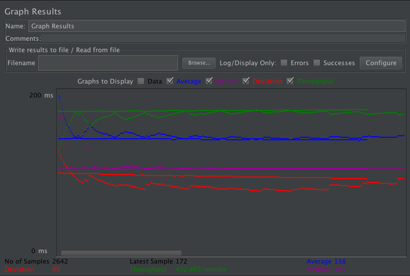
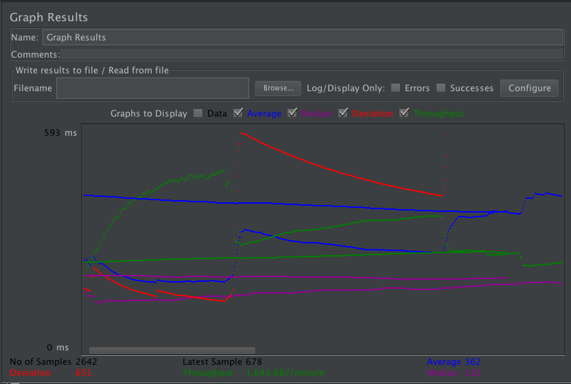
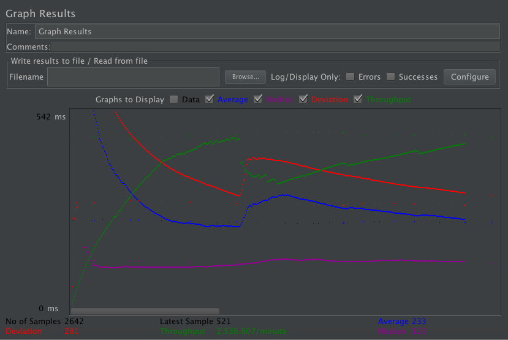
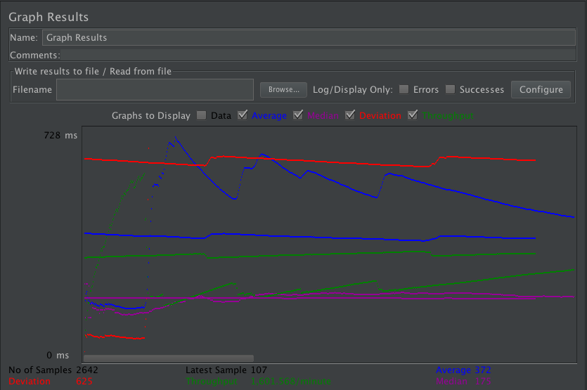
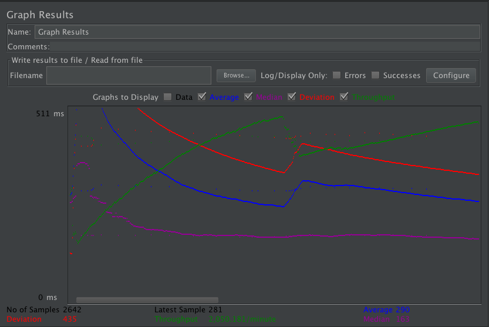
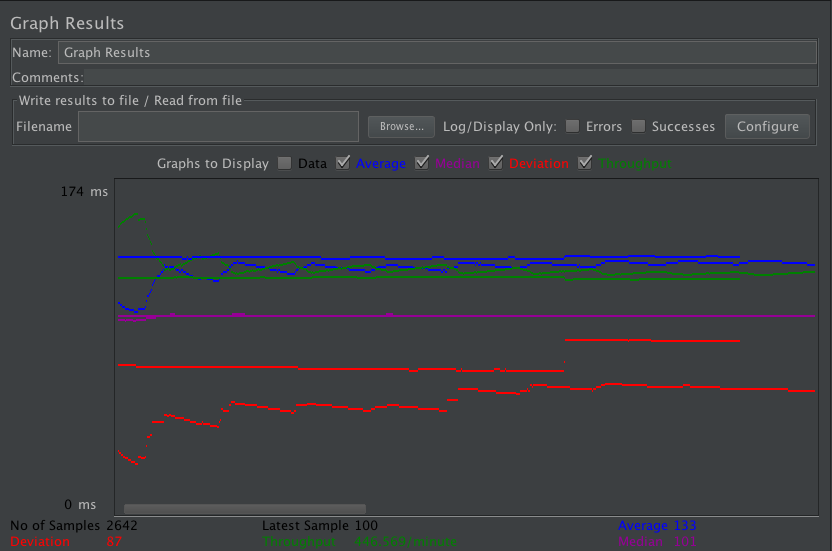
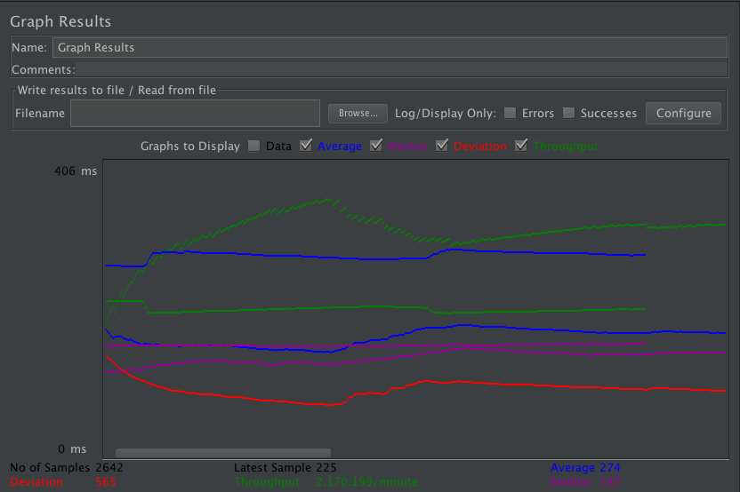
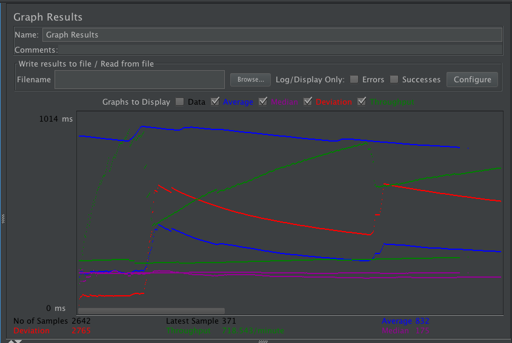
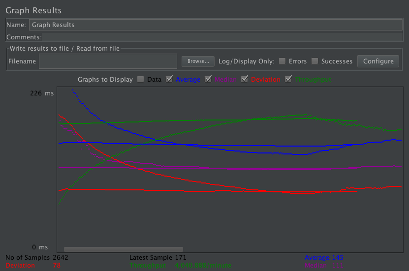

| Single-instance version cases | Graph Results Screenshot | Average Query Time(ms) | Average Search Servlet Time(ms) | Average JDBC Time(ms) | Analysis |
| Case 1: HTTP/1 thread |  | 138 | 6 | 5 | -- |
| Case 2: HTTP/10 threads |  | 362 | 15 | 15 | -- |
| Case 3: HTTPS/10 threads |  | 233 | 22 | 21 | -- |
| Case 4: HTTP/10 threads/No prepared statements |  | 372 | 15 | 14 | -- |
| Case 5: HTTP/10 threads/No connection pooling |  | 290 | 23 | 23 | -- |
| Scaled version cases | Graph Results Screenshot | Average Query Time(ms) | Average Search Servlet Time(ms) | Average JDBC Time(ms) | Analysis |
| Case 1: HTTP/1 thread |  | 133 | 4 | 4 | -- |
| Case 2: HTTP/10 threads |  | 274 | 11 | 10 | -- |
| Case 3: HTTP/10 threads/No prepared statements |  | 832 | 12 | 11 | -- |
| Case 4: HTTP/10 threads/No connection pooling |  | 145 | 15 | 15 | -- |